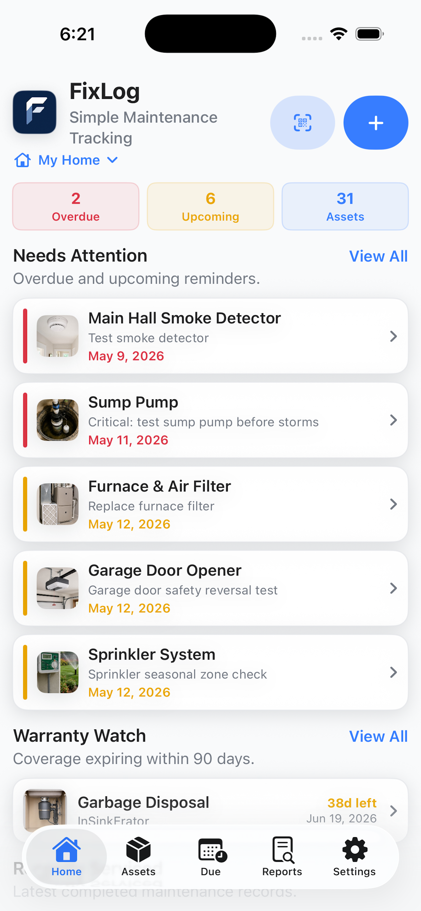
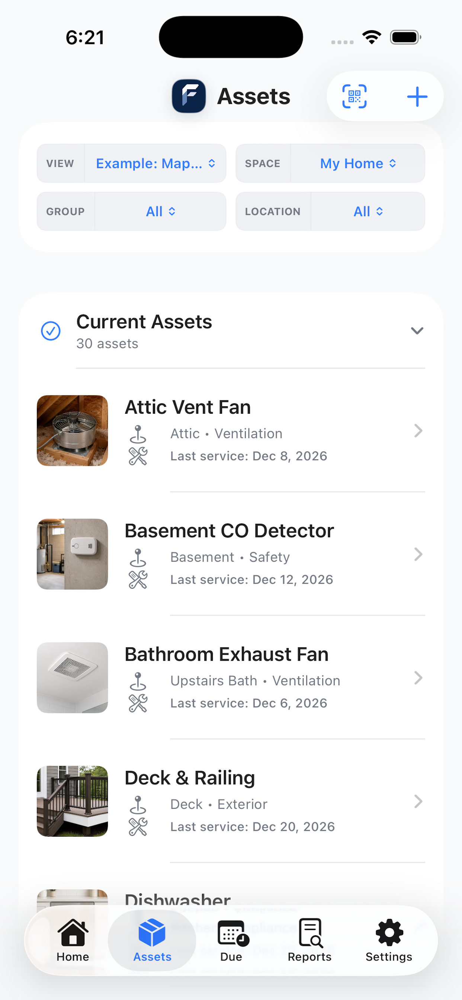
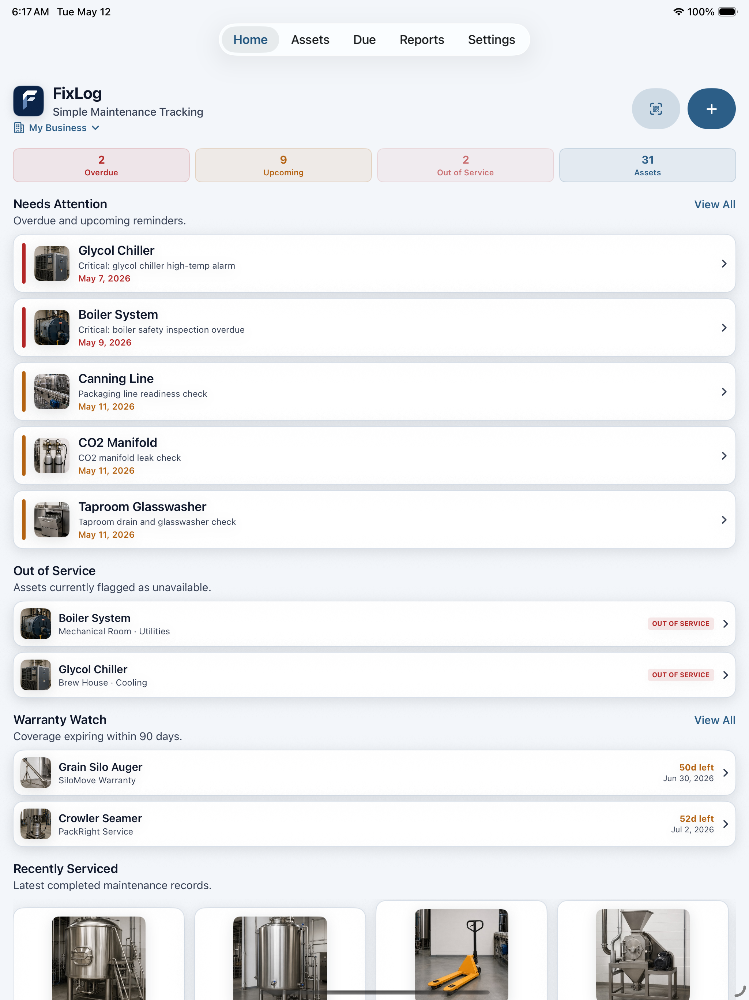
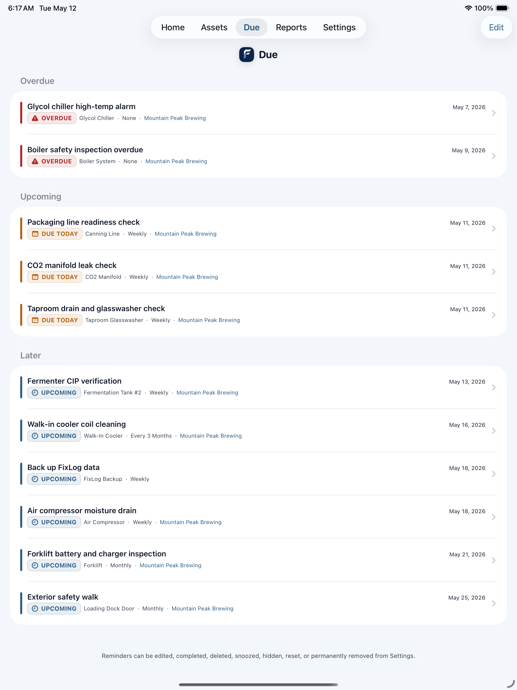

Asset records
Track equipment, tools, vehicles, rooms, facility systems, and other business assets with photos and details.
Small business maintenance app
Track assets, service history, service providers, reminders, photos, and records across your devices without the complexity of enterprise maintenance software.
Built for small shops, offices, studios, service businesses, property operators, and small operators that need organized maintenance records without a heavy CMMS. Available across iPhone, iPad, and Mac.


The problem
Receipts end up in email. Photos sit in camera rolls. Reminders disappear after they fire. Manuals and service notes live with one person. FixLog keeps the maintenance story tied to the actual asset.
Track equipment, tools, vehicles, rooms, facility systems, and other business assets with photos and details.
See overdue, upcoming, recurring, inspection, and warranty-related work before it gets missed.
Keep receipts, manuals, inspection reports, warranty paperwork, photos, service providers, parts, and notes with the asset.
Keep asset details, logs, reminders, and photos available across your supported devices.
A better daily workflow
FixLog is built around a simple loop: see what is due, open the asset, log the work, attach proof, and keep the history ready when you need it.
Overdue work, upcoming service, and warranty dates stay visible.
Add notes, costs, photos, parts, service providers, and documents.
Pull up the asset history for repairs, audits, resale, inspections, service handoffs, or business records.

Built for small operations
FixLog is for small businesses that need better records, but do not need a heavy enterprise platform, login system, or complicated software rollout.
Track machines, shop tools, HVAC, safety gear, vehicles, tanks, carts, appliances, office equipment, and facility systems.
Put a QR code on equipment so the right asset record opens quickly for service history, notes, and new repair logs.
Who FixLog is for
Use FixLog for small shops and workshops, offices, studios, rental and property operators, service businesses, clinics, wellness spaces, cafes, local retail, contractors, and equipment-heavy small businesses.
Track equipment, tools, vehicles, systems, rooms, or business assets in one organized place.
Record repairs, inspections, service notes, parts used, costs, photos, and dates.
Set recurring maintenance reminders so important work does not get missed.
Export maintenance records for audits, warranty claims, service handoffs, and business documentation.
Built for useful records
FixLog gives every asset its own history, due work, documents, warranty status, costs, QR code, and exportable record. It helps you know what assets you have, what work was done, when maintenance is due, what repairs cost, and where service history is stored.
Tell you something is due, then disappear.
Hold details, but do not create a maintenance workflow.
Track rows, but not photos, QR labels, documents, and reports.
Connects the asset, work, history, documents, costs, and reports.
Screenshots
See overdue, upcoming, and warranty-related work.
Keep asset details, photos, and service history together.
Export records for inspections, budgeting, operations, and service handoffs.

Get organized before the next repair
Download FixLog free, explore the example data, and unlock unlimited tracking monthly or with a lifetime purchase when you are ready.